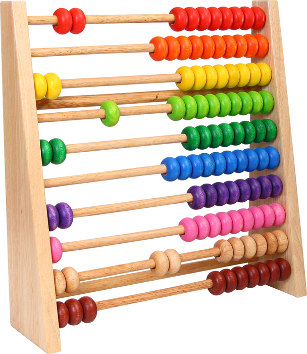
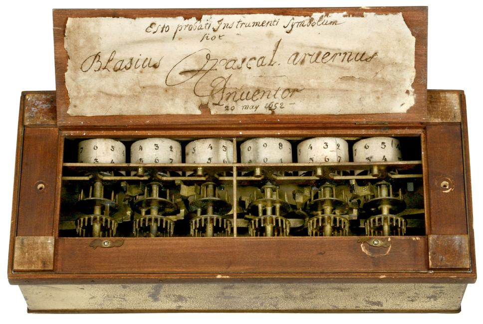
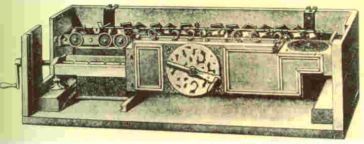
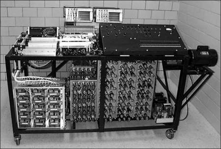

-
Inicio de la generación cero
-

5000 a.C.
Tuvo aparición el Ábaco, inventado por la antigua civilización egipcia (utilizado en la Edad Media por mercaderes árabes y europeos).
-

1642
Blaise Pascal fabrica la primer máquina sumadora de la historia, la Pascalina (precursora de las calculadoras actuales).
-

1694
Sobresale la creación de Gottfried Wilhelm von Leibniz la máquina de multiplicar (1694).
-

1822
Charles P. Babbage creó la máquina diferencial y analítica, la primera era capaz de calcular logaritmos con decimales (pero no fue terminada). La segunda tenía un diseño basado en tarjetas perforadas.
-

1880
Herman Hollerith tiene la oportunidad de apoyar en el censo estadounidense con una máquina estadística de fichas perforadas.
-

1941
El Dr. John Atanasoff y el físico Clifford Berry trabajan en la construcción de la máquina ABC misma que podía realizar un trabajo a la vez y se limitaba a la solución de problemas matemáticos. No obstante, poseía muchas de las características de las máquinas que la sucedieron.